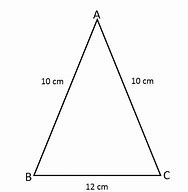

Triángulo Isósceles
En geometría, un triángulo isósceles es un triángulo que tiene dos lados de igual longitud. Al ángulo formado por lados de igual longitud se le denomina ángulo en el vértice y al lado opuesto a él, lado base.
Eje de simetría
Un triángulo con exactamente dos lados iguales tiene exactamente una simetría rotacional, que pasa por el vértice del ángulo y también pasa por el punto medio de la base. Por lo tanto, el eje de simetría coincide con (1) la bisectriz del ángulo del vértice, (2) la mediana trazada desde la base, (3) la altura desde el vértice del ángulo y (4) la mediatriz de la base.(Ostermann y Wanner, 2012, p. 55, Exercise 7)
Línea de Euler
La recta de Euler de cualquier triángulo atraviesa el ortocentro del triángulo (la intersección de sus tres alturas), su centroide (la intersección de sus tres medianas) y su circuncentro (la intersección de las mediatrices de sus tres lados, que también es el centro de la circunferencia circunscrita que pasa por los tres vértices). En un triángulo isósceles con exactamente dos lados iguales, la línea de Euler coincide con el eje de simetría. Esto se puede ver de la siguiente manera. Tal y como se señaló en la sección anterior, el eje de simetría coincide con una altura, la intersección de las alturas, que debe estar en esa primera altura, debe por lo tanto estar en el eje de simetría; dado que el eje coincide con una mediana, la intersección de las medianas, consecuentemente también en esa mediana, debe por lo tanto estar en el eje de simetría; y dado que el eje coincide con una mediatriz, la intersección de las tres mediatrices debe por lo tanto estar en el eje de simetría.
Si el ángulo del vértice es agudo (lo que implica que el triángulo isósceles es un triángulo agudo), entonces el ortocentro, el centroide y el circuncentro caen dentro del triángulo. Si el ángulo del vértice, y por lo tanto el triángulo, es obtuso, entonces el centroide también queda en el interior del triángulo, pero el circuncentro cae fuera de él (más allá de la base) y el ortocentro también cae fuera del triángulo (más allá del vértice).
En un triángulo isósceles, el incentro (la intersección de sus bisectrices, que es el centro de la circunferencia inscrita, es decir, el círculo que internamente es tangente a los tres lados del triángulo) se encuentra en la línea de Euler.

Si el triángulo isósceles es obtuso, recto o agudo, depende del ángulo del vértice. En Geometría euclidiana, los ángulos de la base no pueden ser obtusos (más de 90°) o rectos (igual a 90°), porque sus medidas sumarían al menos 180°, el total de todos los ángulos en cualquier triángulo euclidiano. De aquí se deduce que un triángulo es obtuso o recto si y solo si uno de sus ángulos es obtuso o recto, respectivamente, y un triángulo isósceles es obtuso, recto o agudo si y solo si su ángulo de vértice es respectivamente obtuso, recto o agudo.
Además del triángulo isósceles rectángulo, se han estudiado otras formas específicas de triángulos isósceles. Estos incluyen el triángulo de Calabi (un triángulo con tres cuadrados inscritos congruentes), el triángulo áureo y el gnomon áureo (dos triángulos isósceles cuyos lados y la base están en la relación del número áureo), y el triángulo 30-30-120 del teselado triangular triaquis.
Cinco sólidos de Catalan (triaquistetraedro, triaquisoctaedro, tetraquishexaedro, pentaquisdodecaedro y triaquisicosaedro), tienen caras que son triángulos isósceles.